00读前一分钟 · 全文脉络（做完题再看也行）
①段 引子：得州天气刚从酷热里转凉，州教育委员会的会场却要「升温」——官员们要争论学校怎么教气候变化。天气是幌子，会议的火药味才是正题（21 题）。
②③段 两个人、两种立场：委员 Hardy 站能源业一边，反对修改针对十一二岁孩子的科学标准，理由是「得州靠能源吃饭」；Quinn（监督公共教育的非营利组织）反驳：这类委员把学者一辈子的研究随手当成又一种错误观点打发掉（22 题）。
④段 由点到面：得州的争论只是全国的缩影——研究者、政策制定者、师生都在加紧要求学校多讲气候变化的事实。
⑤段 数据：一项研究给各州气候教育打分，只有勉强一半的州拿到 B+ 以上；得州垫底拿 F，而且它的教材卖到全国，坏影响被放大（23 题）。
⑥⑦⑧段 三个问题：① 州标准只是个作用有限的基准——决定权在地方，标准写得再好也不等于课堂会教（24 题）；② 气候变化在低龄课程和生物、化学等大科目里体现不足；③ 官方教材体现了科学共识，可能源行业协会赞助的非官方教材正被发到老师手里（25 题）。
📌 一句话主旨：借得州一场会议引出全国性的问题——美国学校的气候变化教育不够，且容易被利益方左右。
📌 结构套路：新闻事件引入 → 正反人物对垒 → 扩到全国 → 数据定性 → 逐条列问题。五道题一段一题、顺序出题，读一段做一题即可。
📌 结构套路：新闻事件引入 → 正反人物对垒 → 扩到全国 → 数据定性 → 逐条列问题。五道题一段一题、顺序出题，读一段做一题即可。
01原文精读
🟡 黄色高亮 = 重难点词/短语，点击右侧出卡片 ｜ 蓝色虚线 = 长难句，点击跳到精析 ｜ 每段「意」= 段落意译 ｜ 选中任意其他单词浮出「查有道」 ｜ 原文由你的浏览器从原卷识别成文字（首次约 3 秒，之后秒开）；「原卷对照」可逐句看扫描原图、改识别错字
①
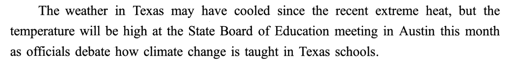
🟡 cooled · extreme heat · temperature · Board · debate
①段意：得州的天气在前阵子的酷热之后也许已经转凉，可本月在奥斯汀召开的州教育委员会会议上，气氛会很热烈——官员们要争论得州学校该怎样讲授气候变化。
②
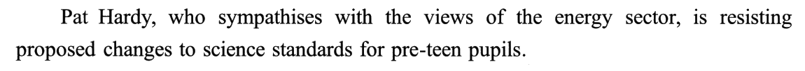
🟡 sympathises with · sector · resisting · pre-teen
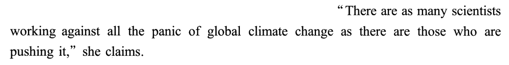
🟡 panic · pushing
🟡 recognise
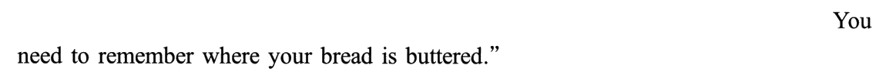
🟡 where your bread is buttered
②段意：帕特·哈代赞同能源行业的看法，正在抵制针对十一二岁学生的科学教育标准修改提案。她说，反对全球气候变化恐慌的科学家，和推波助澜的科学家一样多；得州是能源大州，大家得认清这一点——要记住自己的饭碗在哪儿。
③
🟡 sharply dispute
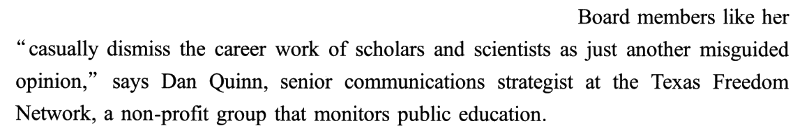
🟡 Board members · casually · dismiss · scholars · misguided · strategist · non-profit · monitors
③段意：大多数科学家和专家强烈反对哈代的观点。得州自由网络（一个监督公共教育的非营利组织）的资深传播策略师丹·奎因说，像她这样的委员，随随便便就把学者和科学家毕生的研究成果当成又一种误入歧途的观点，不予理会。
④
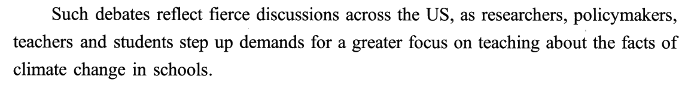
🟡 reflect · fierce · policymakers · step up
④段意：这类争论折射出全美范围的激烈讨论：研究者、政策制定者、教师和学生都在加紧呼吁，要求学校更加重视讲授气候变化的事实。
⑤
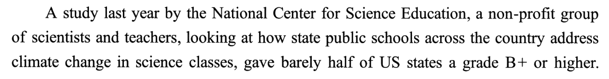
🟡 non-profit · address · barely half · grade
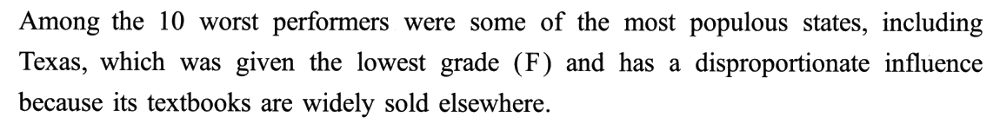
🟡 performers · populous · disproportionate influence
⑤段意：美国国家科学教育中心（由科学家和教师组成的非营利组织）去年做了一项研究，考察全美各州公立学校在科学课上如何处理气候变化这一主题，结果只有勉强一半的州拿到 B+ 或更高的评分。表现最差的十个州里有几个人口大州，得州就在其中——它拿了最低的 F；又因为得州的教材在外州也卖得很广，它的影响力大得与之不相称。
⑥
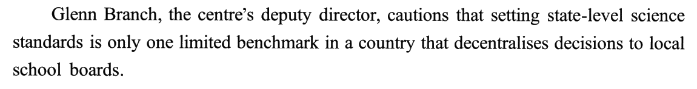
🟡 cautions · limited benchmark · decentralises · school boards
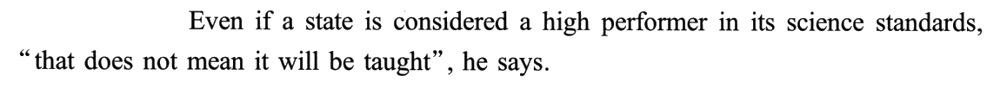
🟡 performer
⑥段意：该中心副主任格伦·布兰奇提醒说，在一个把决策权下放给地方学校委员会的国家，制定州一级的科学标准只是一个作用有限的基准。他说，即便某个州的科学标准被评为出色，「也不等于课堂上就会教」。
⑦
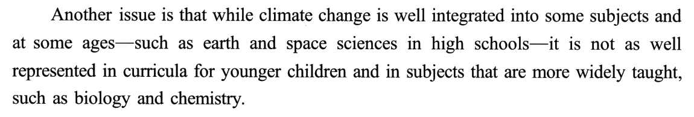
🟡 integrated into · represented · curricula
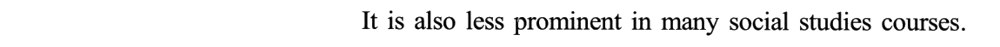
🟡 prominent · social studies
⑦段意：另一个问题是：气候变化虽然已很好地融进了某些科目和某些年龄段（比如高中的地球与空间科学），在低龄儿童的课程里、在生物和化学这类覆盖面更广的科目里，却没有得到同样充分的体现；在许多社会学科课程中，它的分量也不突出。
⑧
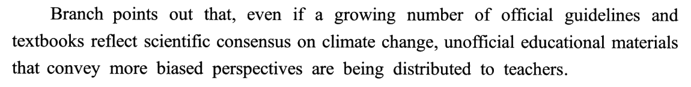
🟡 guidelines · consensus · convey · biased · perspectives · distributed
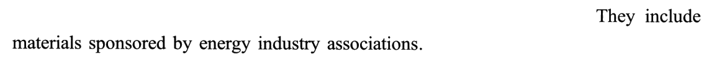
🟡 sponsored by · associations
⑧段意：布兰奇指出，尽管越来越多的官方指南和教科书反映了关于气候变化的科学共识，观点更带倾向性的非官方教学材料却正被分发到教师手中，其中就有能源行业协会赞助的材料。
02题目与解析（点选项即判 · 再看解析）
写作目的21. In Paragraph 1, the weather in Texas is mentioned to ______.
[A] forecast a policy shift in Texas schools.
[B] stress the consequences of climate change.
[C] indicate the atmosphere at the board meeting.
[D] draw the public’s attention to energy shortages.
答案 C ①段只有一句，骨架是「天气may have cooled……but 会议上 the temperature will be high」。may 让步、but 转折，重心在后半句；temperature 一词两用——前半句暗指天气的温度，后半句说的是会场的火药味（激烈程度）。as 引出原因：官员们要争论气候变化怎么教。所以提天气是为了反衬会议之「热」，即 atmosphere（气氛）。
干扰项：A 由「天气」联想到「预报」（forecast），又把 change 的主体从气候偷换成学校政策——文中没有任何政策转向的预告。B 首段关注的是「怎么教气候变化」，没讲气候变化的后果。D 把②段的 energy sector 联想成「能源短缺」，shortages 在文中无出处。
技巧：开篇事例题，答案一律往上一层找：事例本身不是答案，它引出的话题才是。先看段内的转折词（but）锁定重心，再看事例与重心之间的相似点——这里是「温度」：天气降温 vs 会场升温。正确项往往是对原文修辞的直白翻译（temperature → atmosphere）。
干扰项：A 由「天气」联想到「预报」（forecast），又把 change 的主体从气候偷换成学校政策——文中没有任何政策转向的预告。B 首段关注的是「怎么教气候变化」，没讲气候变化的后果。D 把②段的 energy sector 联想成「能源短缺」，shortages 在文中无出处。
技巧：开篇事例题，答案一律往上一层找：事例本身不是答案，它引出的话题才是。先看段内的转折词（but）锁定重心，再看事例与重心之间的相似点——这里是「温度」：天气降温 vs 会场升温。正确项往往是对原文修辞的直白翻译（temperature → atmosphere）。
人物观点22. What does Quinn think of Hardy?
[A] She exaggerates the existing panic.
[B] She denies the value of scientific work.
[C] She shows no concern for pre-teens.
[D] She expresses self-contradictory views.
答案 B 题干问 Quinn 怎么看 Hardy ⟹ 只看 Quinn 开口的③❷：委员们 casually dismiss the career work of scholars and scientists，把它当作 just another misguided opinion。dismiss…as（当作……打发掉）、misguided（误入歧途的）、casually（随手）三处全是否定 ⟹ 她否认科学研究的价值。
干扰项：A 人物—观点错配——②❷ 是 Hardy 说「有科学家在推动恐慌」，选项变成 Quinn 说 Hardy「夸大恐慌」。C 曲解②❶：Hardy 反对修改针对 pre-teen 学生的标准，恰恰说明她在关注这个群体（只是立场不同），谈不上漠不关心。D 断章取义：sympathises with（支持能源业）和 resisting（反对修改标准）对象不同——改标准对能源业不利，所以她反对，前后一致。
技巧：人物观点题先看题干里的人名是谁，再只去这个人说话的地方找。本题 A、C、D 的原料全来自第②段（Hardy 的话），题干问的却是 Quinn（第③段）——定位段之外的选项可以先排。找到位置后，抓情感词（dismiss、misguided）定方向。
干扰项：A 人物—观点错配——②❷ 是 Hardy 说「有科学家在推动恐慌」，选项变成 Quinn 说 Hardy「夸大恐慌」。C 曲解②❶：Hardy 反对修改针对 pre-teen 学生的标准，恰恰说明她在关注这个群体（只是立场不同），谈不上漠不关心。D 断章取义：sympathises with（支持能源业）和 resisting（反对修改标准）对象不同——改标准对能源业不利，所以她反对，前后一致。
技巧：人物观点题先看题干里的人名是谁，再只去这个人说话的地方找。本题 A、C、D 的原料全来自第②段（Hardy 的话），题干问的却是 Quinn（第③段）——定位段之外的选项可以先排。找到位置后，抓情感词（dismiss、misguided）定方向。
研究结论23. The study mentioned in Paragraph 5 shows that ______.
[A] climate education is insufficient at state public schools.
[B] policymakers have little drive for science education.
[C] Texas is reluctant to rewrite its science textbooks.
[D] environmental teaching in some states lacks supervision.
答案 A ⑤❶ 给研究结果：gave barely half of US states a grade B+ or higher——barely half 是带态度的「才一半」；⑤❷ 举例：得州拿了最低分 F，而且教材卖到外州，坏影响被放大。总体结果＋最差的例子 ⟹ 州立公立学校的气候教育整体不够（insufficient）。A 是对两句的概括，原文没有 insufficient 这个词。
干扰项：B 与④段相反——policymakers 是「加紧要求」的一方，不是没动力。C 过度推断：⑤❷ 只说得州教材卖得广，没说它不愿改写。D 把⑥❶ 的「决策权下放」曲解成「缺乏监督」，而且⑥段已经不是题干问的那项研究。
技巧：研究／数据题，正确项多是结论的概括词（insufficient、limited、mixed），干扰项爱借别段的词（B 借④、D 借⑥）——先确认选项的原料是不是来自题干给的那一段。
干扰项：B 与④段相反——policymakers 是「加紧要求」的一方，不是没动力。C 过度推断：⑤❷ 只说得州教材卖得广，没说它不愿改写。D 把⑥❶ 的「决策权下放」曲解成「缺乏监督」，而且⑥段已经不是题干问的那项研究。
技巧：研究／数据题，正确项多是结论的概括词（insufficient、limited、mixed），干扰项爱借别段的词（B 借④、D 借⑥）——先确认选项的原料是不是来自题干给的那一段。
人物观点24. According to Branch, state-level science standards in the US ______.
[A] call for regular revision.
[B] require urgent application.
[C] have limited influence.
[D] cater to local needs.
答案 C ⑥❶ Branch 用 cautions（告诫）开口：州级标准 is only one limited benchmark，原因是 decentralises decisions to local school boards（决策权在地方学校委员会）。⑥❷ 再补一刀：标准评得再好，that does not mean it will be taught。两句合起来 ⟹ 州标准影响力有限；limited 原词复现。
干扰项：A「定期修订」文中未提，是从「标准有问题」主观推出的对策。B 把「标准好也未必落实」偷换成「标准迫切需要实施」——原文说的是落实不了，不是急着落实。D 把 local school boards（地方学校委员会）换成 local needs（地方需求）：同一个 local，换了中心词；何况文中也没说标准是否迎合地方。
技巧：人物话里的抽象词（limited benchmark）看不透时，往后读一句——作者通常会马上换个说法解释（Even if … does not mean …）。看到 caution / warn 开口，后面多半是「别高估」。
干扰项：A「定期修订」文中未提，是从「标准有问题」主观推出的对策。B 把「标准好也未必落实」偷换成「标准迫切需要实施」——原文说的是落实不了，不是急着落实。D 把 local school boards（地方学校委员会）换成 local needs（地方需求）：同一个 local，换了中心词；何况文中也没说标准是否迎合地方。
技巧：人物话里的抽象词（limited benchmark）看不透时，往后读一句——作者通常会马上换个说法解释（Even if … does not mean …）。看到 caution / warn 开口，后面多半是「别高估」。
末段推理25. It is implied in the last paragraph that climate change teaching in some schools ______.
[A] agrees to major public demands.
[B] reflects teachers’ personal biases.
[C] may misrepresent the energy sector.
[D] can be swayed by external forces.
答案 D ⑧❶ 是让步—转折：even if 官方指南和教材反映了科学共识（让步，不是重点），主句才是重点——观点more biased的非官方教材正被发到老师手里。⑧❷ 点出来源：sponsored by energy industry associations。推理链：能源行业出钱 → 带倾向的教材进课堂 → 教学会受外部力量影响。
干扰项：A 把⑧❶ 让步部分「体现科学共识」曲解为「顺应公众需求」，public demands 无出处。B 偏见的主人被换了——带偏见的是非官方教材，不是教师。C 因果倒置：原文是能源业影响教学，选项成了教学歪曲能源业。
技巧：末段推理题先把段内逻辑理顺：even if 后是让步，主句才是作者要说的；再把具体的人／物往上抽象一层（energy industry associations → external forces）。另外，②❹ Hardy 那句「记住你的饭碗在哪」早已埋下伏笔：利益会左右教学——首尾呼应时，答案方向最稳。
干扰项：A 把⑧❶ 让步部分「体现科学共识」曲解为「顺应公众需求」，public demands 无出处。B 偏见的主人被换了——带偏见的是非官方教材，不是教师。C 因果倒置：原文是能源业影响教学，选项成了教学歪曲能源业。
技巧：末段推理题先把段内逻辑理顺：even if 后是让步，主句才是作者要说的；再把具体的人／物往上抽象一层（energy industry associations → external forces）。另外，②❹ Hardy 那句「记住你的饭碗在哪」早已埋下伏笔：利益会左右教学——首尾呼应时，答案方向最稳。
03长难句精析（正文蓝色虚线句）
s1（①❶）
- 让步—转折：
The weather … may have cooled …, but the temperature will be high …——may have done 是对过去的推测（「也许已经转凉」），may 本身就带让步味，but 后才是重心。 - since 在这里是介词「自……以来」：since the recent extreme heat ＝ 自前阵子的酷热以来。
- as 引导原因状语从句：as officials debate …（因为官员们要争论……），as 后的 how 从句作 debate 的宾语。
- ⭐ temperature 双关：前半句的「天气」让读者以为说温度，后半句落到「会议」上 ⟹ 是情绪的热度。21 题 C 的 atmosphere 就是这层意思的直译。
意：得州天气在前阵子的酷热之后也许已经转凉，但本月奥斯汀的州教育委员会会议将会气氛火热，因为官员们要争论得州学校该如何讲授气候变化。
s2（②❷）
- as many A as B：
There are as many scientists working against … as there are those who are pushing it——同级比较：反对恐慌的科学家「和」推动恐慌的科学家「一样多」。 - working against … 是现在分词作后置定语，修饰 scientists；those who … 里的 those ＝ those scientists。
- it 指代前面的 the panic（of global climate change）——push it ＝ 推波助澜。
- ⭐ 22A 的陷阱就从这句来：说话人是 Hardy，说的是「别的科学家」。选项把它改成「Quinn 认为 Hardy 夸大恐慌」，观点的主人与对象全换了。
意：她声称，反对全球气候变化恐慌的科学家，与推动这种恐慌的科学家一样多。
s3（③❷）
- 倒装的引语句：直接引语在前，
says Dan Quinn主谓倒装在后——外刊引语的标准格式，说话人在句末，做题时要往后找人名。 - 引语的主干：
Board members like her casually dismiss A as B——dismiss A as B ＝「把 A 当作 B 打发掉」。like her 是介词短语修饰 members（像她这样的委员）。 - Dan Quinn 之后两层同位语：senior communications strategist at …（他的职位），a non-profit group that monitors public education（解释那个组织）——人物身份就是立场：监督公共教育的人自然站在科学一边。
- ⭐ 22 题正源：casually、dismiss、misguided 三处否定 ⟹ B denies the value of scientific work。
意：得州自由网络（一个监督公共教育的非营利组织）的资深传播策略师丹·奎因说，像她这样的委员会成员，随随便便就把学者和科学家毕生的研究当作又一种误入歧途的观点，不屑一顾。
s4（④❶）
- 主干：
Such debates reflect fierce discussions across the US——Such debates 回指①–③段的得州之争，本句是全文「由点到面」的转折点。 - as 引导原因（或伴随）状语从句：as researchers, policymakers, teachers and students step up demands …——四个并列主语，谓语 step up。
demands for a greater focus on teaching about …：demand for ＋ 名词（对……的要求）；focus on ＋ doing。- ⭐ 23B 与本句相反：policymakers 是加紧要求的一方，不是 little drive。
意：这类争论折射出全美范围的激烈讨论，因为研究者、政策制定者、教师和学生都在加紧要求学校更加重视讲授气候变化的事实。
s5（⑤❶）
- 主干：
A study … gave barely half of US states a grade B+ or higher——give sb sth 双宾语：给一半的州打出 B+ 以上。主语和谓语之间隔了二十多个词，先找到 gave 再回头。 - 主语的三层修饰：① last year（时间）② by the National Center for Science Education（执行者）＋ 同位语 a non-profit group of scientists and teachers ③ looking at how … address climate change …（现在分词作后置定语，说明研究内容）。
- looking at 后的 how 从句：how state public schools across the country address climate change in science classes——address ＝ 应对、处理（熟词僻义）。
- ⭐ barely half：「才一半」，带说话人的不满 ⟹ 23A insufficient 的根。
意：美国国家科学教育中心（一个由科学家和教师组成的非营利组织）去年开展的一项研究，考察了全美各州公立学校在科学课上如何处理气候变化问题，结果只给勉强一半的州打出了 B+ 或更高的分数。
s6（⑤❷）
- 完全倒装：
Among the 10 worst performers were some of the most populous states——介词短语 Among … 提前，谓语 were 放到主语前；真正的主语是 some of the most populous states，所以 were 用复数。 - including Texas，后接非限制性定语从句 which was given … and has …——一个 which 管两个谓语（被打 F；影响不相称）。
- because 引出原因：its textbooks are widely sold elsewhere——影响力大的原因是教材卖得广，不是「不愿改教材」（23C 过度推断）。
意：表现最差的 10 个州里有几个人口大州，其中就有得州——它拿到了最低分 F，又因教材在外州广泛销售而具有不相称的影响力。
s7（⑥❶）
- 主干：
Glenn Branch … cautions that …——caution that ＝ 告诫说；the centre’s deputy director 是同位语。 - that 宾语从句里，动名词短语作主语：
setting state-level science standards is only one limited benchmark，谓语 is 用单数。 in a country that decentralises decisions to local school boards——that 定语从句修饰 country；decentralise A to B ＝ 把 A 下放给 B。这个定语从句交代了 limited 的原因。- ⭐ 24 题正源 limited benchmark；D 项把 local school boards 换成 local needs。
意：该中心副主任格伦·布兰奇提醒说，在一个把决策权下放给地方学校委员会的国家，制定州一级的科学标准只是一个作用有限的基准。
s8（⑦❶）
- 表语从句套让步从句：
Another issue is that while …, it is not as well represented in …——that 引导表语从句；从句里 while 引导让步（虽然），主句是 it is not as well represented。 - 两个破折号夹着插入语：such as earth and space sciences in high schools，举例说明「融入得好」的科目——读的时候先跳过。
- not as well represented in A and in B：两个 in 并列——A＝curricula for younger children，B＝subjects that are more widely taught（that 定语从句），后面 such as biology and chemistry 再举例。
- 本句是「三个问题」里的第二个：气候变化讲得好的地方少，覆盖面最广的地方反而讲得少。
意：另一个问题是，尽管气候变化已很好地融入某些科目和某些年龄段（比如高中的地球与空间科学），但在面向低龄儿童的课程中、在生物和化学这类更普遍开设的科目中，它没有得到同样充分的体现。
s9（⑧❶）
- 主干：
Branch points out that …；that 从句里先插一个 even if 让步从句（逗号隔开），再接主句。 - 让步部分：
even if a growing number of … reflect …（越来越多的官方指南和教材体现了科学共识）——a growing number of ＋ 复数名词，谓语 reflect 用复数。 - 主句：
unofficial educational materials … are being distributed to teachers——现在进行时的被动，「正在被分发」；that convey more biased perspectives 是定语从句修饰 materials。 - ⭐ 25 题：让步部分（官方教材体现共识）是 A 项的原料；主句里偏见的主人是 materials，不是 teachers（B 项）。
意：布兰奇指出，即便越来越多的官方指南和教科书体现了关于气候变化的科学共识，观点更带倾向性的非官方教学材料却正被分发到教师手中。
04词汇复盘（点卡片看详情）
05可搬进作文/翻译的素材
本篇话题——教育改革、环境保护、利益集团与公共利益——正对大作文里的「教育」「环保」「社会责任」类题目。英文例句都是按原文句式自拟的，只借骨架。
X may have cooled, but the temperature will be high at Y.
「X 也许已经降温，但 Y 那边要升温了」——用一个具体场景引出争论的开篇双关。可套：The summer heat may have faded, but the debate over online classes is only heating up.
There are as many A as there are B.
「A 和 B 一样多」——写正反两派「势均力敌」时用：There are as many people who welcome remote work as there are those who resent it.
dismiss A as just another B
「把 A 当成又一个 B 打发掉」——批评轻视某事的态度：We should not dismiss young people’s concerns as just another passing trend.
Such debates reflect fierce discussions across …
「这类争论折射出更大范围的激烈讨论」——由个案扩到全社会的过渡句，放在第二段开头：Such debates reflect fierce discussions across society about how to balance screen time and study.
step up demands / efforts for …
「加紧呼吁 / 加大力度」——建议段必备：The government should step up efforts to promote garbage sorting.
X is only one limited benchmark; a high score does not mean …
「X 只是作用有限的基准，分数高不等于……」——反驳唯指标论：Exam scores are only one limited benchmark; a high score does not mean a student can think independently.
while A is well integrated into …, it is not as well represented in …
「A 在某处融入得好，在另一处却没有充分体现」——写「发展不平衡」的对照句：While digital tools are well integrated into city schools, they are not as well represented in rural classrooms.
Even if …, materials that convey biased perspectives are being …
「即便……，带偏见的内容仍在……」——让步后亮出隐忧：Even if most platforms ban false advertising, content that conveys misleading claims is still being spread.
话题词包：climate education · scientific consensus · vested interests
写「环保教育 / 利益集团影响公共决策」时直接可用：vested interests（既得利益）＝ ②❹ 那句「饭碗在哪」的书面说法；scientific consensus 科学共识；sponsored materials 赞助材料。